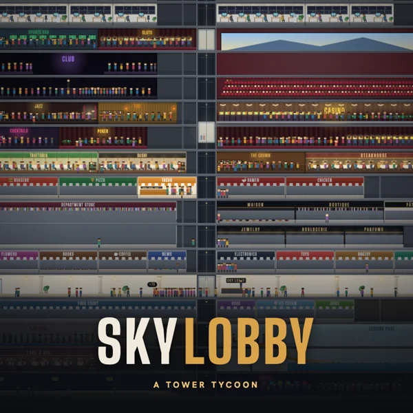
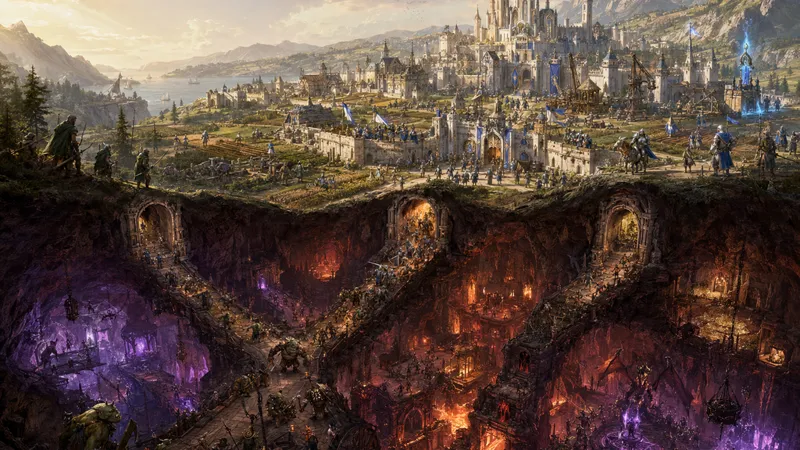
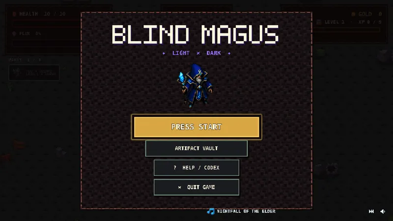
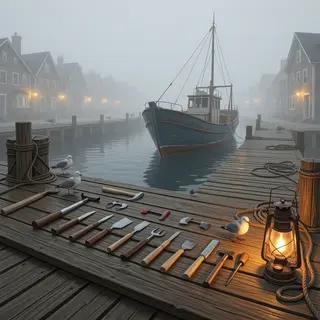

02 / BUILD SOMETHING ENORMOUS
The sky’s the limit.
Hotels, shops, impatient tenants. Make a tiny city stand tall in Sky Lobby.
Play Sky Lobby ↗Small studios. Strange worlds. Games that stay with you.
A handpicked corner of the internet, ready to play.

A WORLD ABOVE. A WORLD BELOW.01 / THE DEEP DIVE
There’s the kingdom you build. Then there’s what you find underneath it. Crown & Chasm turns that tension into a very good reason to keep digging.
Enter Crown & Chasm ↗FOLLOW YOUR CURIOSITY

02 / BUILD SOMETHING ENORMOUS
Hotels, shops, impatient tenants. Make a tiny city stand tall in Sky Lobby.
Play Sky Lobby ↗
03 / BRAVE THE UNKNOWN
Gather a party and chase the next artifact in the pixel world of Blind Magus.
Play Blind Magus ↗
04 / TAKE THE SCENIC ROUTE
Slow down, follow your curiosity, and discover a different pace in Harbor Stories.
Play Harbor Stories ↗Every selection is free to play in your browser.
One Google sign-in, and you’re in.